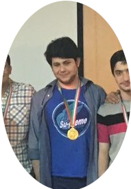

About MeDuring CollegeGiven my academic record, I was exempt from taking the national university entrance exam (Konkour). This is an honour given to only a handful of students each year. So I decided to enter Sharif University of Technology which is the most prestigous engineering school in Iran. However, unlike many of my peers, my interest in Elecetrical Engineering (EE) did not begin from an early age. A sense of novelty and an obsession for solving complex puzzles derived me to appreciete EE. Initially, I cast a wide net, exploring a broad range of topics. But I soon realized that truly understanding a field required a deep dive, investing significant time and effort to uncover its intricacies. Much like navigating in the dark, as you persist, your eyes will adapt and many structures emerge from the darkness. This is exactly the core responsibility of a researcher: to persist and observe. Yet, it takes more to be successful. My academic journey has solidified my passion for mathematically rigorous fields, leading me to explore machine learning and control theory. Through rigorous coursework, I have built a strong foundation in these areas, preparing me for in-depth research. In my final year, I spearheaded a major research project on medical image processing. This project, which was positively received by my professors, allowed me to hone my research skills, including literature review, academic writing, and conducting experiments. The culmination of my efforts was presenting my research in a poster talk, which subsequently earned me a distinguished thesis award from my department. Moving forward, I aspire to further my understanding and contribute to the field of information processing through a PhD program. Before College

Before college, I was a student at Tehran's Allameh Helli high school. My sophomore year was the first time I went for stargazing. This involved finding celestial objects such as planets, galaxies, and nebulas using a telescope. I enjoyed this immersive experience to the extent that I decided to do it competitively. I signed up for the national olympiad on astrophysics and astronomy. Olympiads in Iran are very competitive since the prize they offer is highly sought after. They assessed more than 10,000 junior and sophomore students on many preliminary subjects and I was selected for a second stage, comprising of only 40 people from all over Iran. We were invited to a summer school where university professors taught us celestial mechanics, astrophysics, and cosmology. At the end, they test us again and I won a bronze medal. Being intellectually challenged and exposed to fine and rigorous mathematical reasoning throughout the summer, determined me to dive deeper. Next year around, I signed up for the national physics olympiad to test myself in a more theoretically focused event. For nearly a year I developed my problem solving skills and learned how to make arguments and break down complex problems into managable bits. I found my clarity of thinking when contemplating over a piece of paper. I practiced self-study and soon became confident to dive into any subject by myself. Finally, I won the gold medal this time. This is a photo of me from that memorable day. |